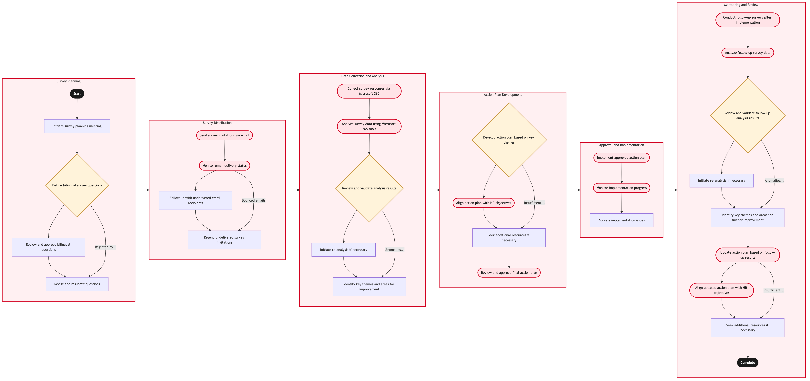

Updated 2026-08-21
Employee Engagement Survey and Action Planning
Process flow
Click to zoom

Process steps
▼
Phase 1 — Survey Planning
4 steps
| Step | Activity | Role | System | Input | Output | KPI | Dec | Exc | Pain point |
|---|---|---|---|---|---|---|---|---|---|
| 1.1 | Initiate survey planning meeting | HR Engagement Specialist | Microsoft 365C | Organizational goals, previous survey data | Survey plan document | Time to complete the initial plan (days) | N | N | Coordination with multiple stakeholders for diverse needs. |
| 1.2 | Define bilingual survey questions | HR Engagement Specialist | Microsoft 365C | Survey plan document | Bilingual survey questionnaire | Time to complete translations (hours) | Y | N | Ensuring accurate translation and cultural relevance. |
| 1.3 | Review and approve bilingual questions | Legal Counsel | Microsoft 365C | Bilingual survey questionnaire | Approved bilingual survey questionnaire | Time to review (hours) | N | N | Legal compliance issues. |
| 1.4 | Revise and resubmit questions | HR Engagement Specialist | Microsoft 365C | Feedback from Legal Counsel | Revised bilingual survey questionnaire | Time to revise (hours) | N | N | Iterative refinement process. |
▼
Phase 2 — Survey Distribution
4 steps
| Step | Activity | Role | System | Input | Output | KPI | Dec | Exc | Pain point |
|---|---|---|---|---|---|---|---|---|---|
| 2.1 | Send survey invitations via email | HR Engagement Specialist | Microsoft 365C | Approved bilingual survey questionnaire | Survey invitation sent to employees | Number of emails sent | N | Y | Email delivery issues. |
| 2.2 | Monitor email delivery status | IT Support Analyst | Microsoft 365C | Survey invitation sent | Delivery confirmation report | Time to confirm (minutes) | N | Y | Email bounces or undelivered messages. |
| 2.3 | Follow up with undelivered email recipients | HR Engagement Specialist | Microsoft 365C | Delivery confirmation report | Undelivered emails resent | Number of follow-up emails sent | N | N | Manual intervention required. |
| 2.4 | Resend undelivered survey invitations | HR Engagement Specialist | Microsoft 365C | Undelivered email list | Survey invitation resent to recipients | Time to resend (minutes) | N | N | Repeat delivery process. |
▼
Phase 3 — Data Collection and Analysis
5 steps
| Step | Activity | Role | System | Input | Output | KPI | Dec | Exc | Pain point |
|---|---|---|---|---|---|---|---|---|---|
| 3.1 | Collect survey responses via Microsoft 365 | HR Engagement Specialist | Microsoft 365C | Survey invitations sent | Collected survey responses | Number of responses received | N | Y | Low response rate. |
| 3.2 | Analyze survey data using Microsoft 365 tools | Data Analyst | Microsoft 365C | Collected survey responses | Survey analysis report | Time to analyze (hours) | N | Y | Complex data interpretation. |
| 3.3 | Review and validate analysis results | HR Engagement Specialist | Microsoft 365C | Survey analysis report | Validated survey analysis report | Time to review (hours) | Y | N | Potential data anomalies or errors. |
| 3.4 | Initiate re-analysis if necessary | Data Analyst | Microsoft 365C | Survey analysis report with anomalies | Revised survey analysis report | Time to reanalyze (hours) | N | N | Iterative data refinement. |
| 3.5 | Identify key themes and areas for improvement | HR Engagement Specialist | Microsoft 365C | Validated survey analysis report | Key theme document | Number of identified themes | N | N | Extracting actionable insights. |
▼
Phase 4 — Action Plan Development
4 steps
| Step | Activity | Role | System | Input | Output | KPI | Dec | Exc | Pain point |
|---|---|---|---|---|---|---|---|---|---|
| 4.1 | Develop action plan based on key themes | HR Engagement Specialist | SAP S/4HANAA | Key theme document | Action plan document | Time to develop (days) | Y | N | Resource allocation and prioritization. |
| 4.2 | Align action plan with HR objectives | HR Director | SAP S/4HANAA | Action plan document | Aligned action plan document | Time to align (hours) | N | Y | Objective conflicts or priorities. |
| 4.3 | Seek additional resources if necessary | Resource Manager | SAP S/4HANAA | Insufficient resource report | Resource allocation plan | Time to secure (days) | N | N | External or internal resource sourcing. |
| 4.4 | Review and approve final action plan | HR Committee | SAP S/4HANAA | Aligned action plan document | Approved action plan document | Time to review (hours) | N | Y | Approval delays or rejections. |
▼
Phase 5 — Approval and Implementation
3 steps
| Step | Activity | Role | System | Input | Output | KPI | Dec | Exc | Pain point |
|---|---|---|---|---|---|---|---|---|---|
| 5.1 | Implement approved action plan | HR Engagement Specialist | SAP S/4HANAA | Approved action plan document | Action plan implemented | Number of actions completed | N | Y | Execution challenges or delays. |
| 5.2 | Monitor implementation progress | HR Engagement Specialist | SAP S/4HANAA | Approved action plan document | Implementation status report | Time to monitor (days) | N | Y | Continuous tracking and reporting. |
| 5.3 | Address implementation issues | HR Engagement Specialist | SAP S/4HANAA | Implementation status report with issues | Resolved implementation issues | Time to resolve (hours) | N | N | Problem-solving during execution. |
▼
Phase 6 — Monitoring and Review
8 steps
| Step | Activity | Role | System | Input | Output | KPI | Dec | Exc | Pain point |
|---|---|---|---|---|---|---|---|---|---|
| 6.1 | Conduct follow-up surveys after implementation | HR Engagement Specialist | Microsoft 365C | Approved action plan document | Follow-up survey results | Number of responses received | N | Y | Low response rate. |
| 6.2 | Analyze follow-up survey data | Data Analyst | Microsoft 365C | Follow-up survey results | Follow-up analysis report | Time to analyze (hours) | N | Y | Complex data interpretation. |
| 6.3 | Review and validate follow-up analysis results | HR Engagement Specialist | Microsoft 365C | Follow-up analysis report | Validated follow-up analysis report | Time to review (hours) | Y | N | Potential data anomalies or errors. |
| 6.4 | Initiate re-analysis if necessary | Data Analyst | Microsoft 365C | Follow-up analysis report with anomalies | Revised follow-up analysis report | Time to reanalyze (hours) | N | N | Iterative data refinement. |
| 6.5 | Identify key themes and areas for further improvement | HR Engagement Specialist | Microsoft 365C | Validated follow-up analysis report | Key theme document | Number of identified themes | N | N | Extracting actionable insights. |
| 6.6 | Update action plan based on follow-up results | HR Engagement Specialist | SAP S/4HANAA | Key theme document from follow-up | Updated action plan document | Time to update (days) | N | Y | Resource allocation and prioritization. |
| 6.7 | Align updated action plan with HR objectives | HR Director | SAP S/4HANAA | Updated action plan document | Aligned updated action plan document | Time to align (hours) | N | Y | Objective conflicts or priorities. |
| 6.8 | Seek additional resources if necessary | Resource Manager | SAP S/4HANAA | Insufficient resource report | Resource allocation plan | Time to secure (days) | N | N | External or internal resource sourcing. |
Swim lanes
HR Engagement Specialist1.1 1.2 1.4 2.1 2.3 2.4 3.1 3.3 3.5 4.1 5.1 5.2 5.3 6.1 6.3 6.5 6.6
Legal Counsel1.3
IT Support Analyst2.2
Data Analyst3.2 3.4 6.2 6.4
HR Director4.2 6.7
Resource Manager4.3 6.8
HR Committee4.4
Systems touched
Microsoft 365CSAP S/4HANAA
Key performance indicators
- Time to complete initial survey plan: 5 days
- Number of emails sent: 35,000
- Time to confirm email delivery: 10 minutes
- Number of responses received: 28,000
- Time to analyze survey data: 16 hours
Risks and control points
- Low response rate from employees
- Complex data interpretation and analysis challenges
- Resource allocation issues leading to delays
- Approval delays or rejections by the HR Committee
- Execution challenges during implementation
Air Canada Process Wiki — process and systems reference compiled from public sources
for IT Application Management and User Support pre-sales discovery.
Built 2026-08-21. Every system carries an evidence tier: tier C is an industry pattern and tier U is an open
question, and neither should be asserted as fact about Air Canada without confirmation in discovery.
Not affiliated with or endorsed by Air Canada. Air Canada, Aeroplan and Altitude are trademarks of Air Canada.